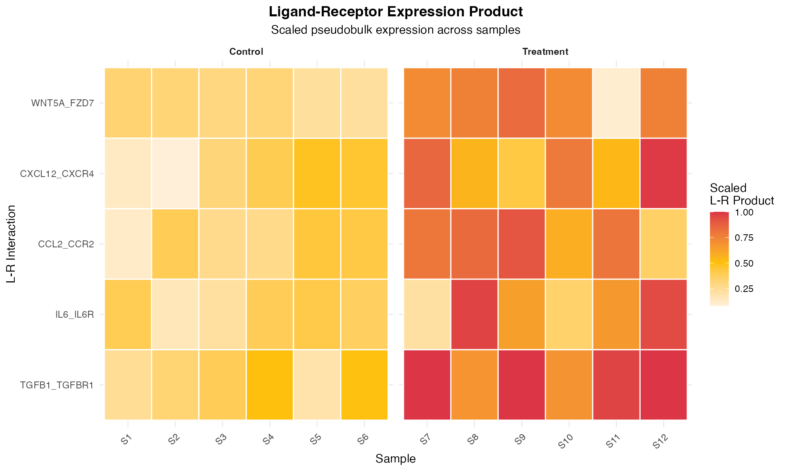
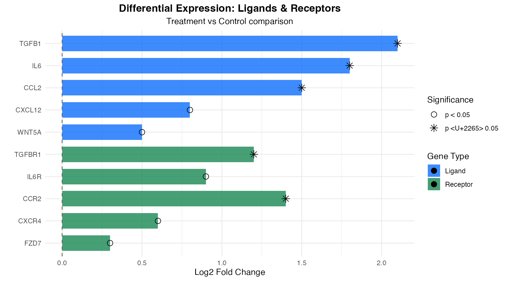
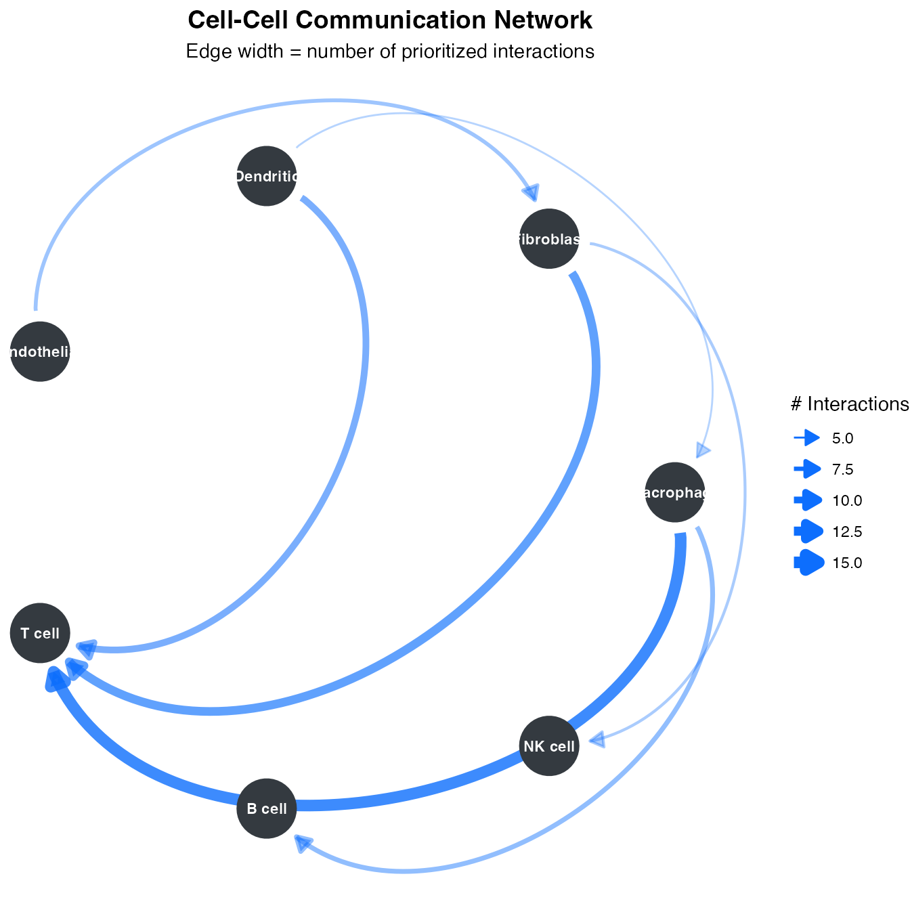
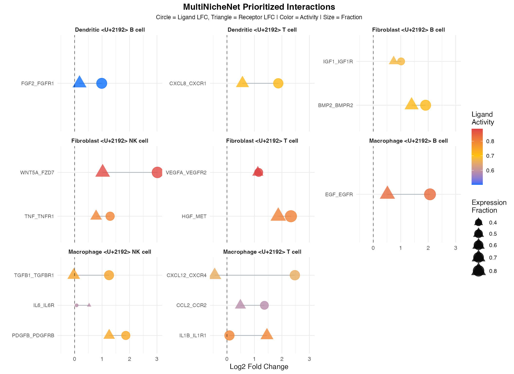
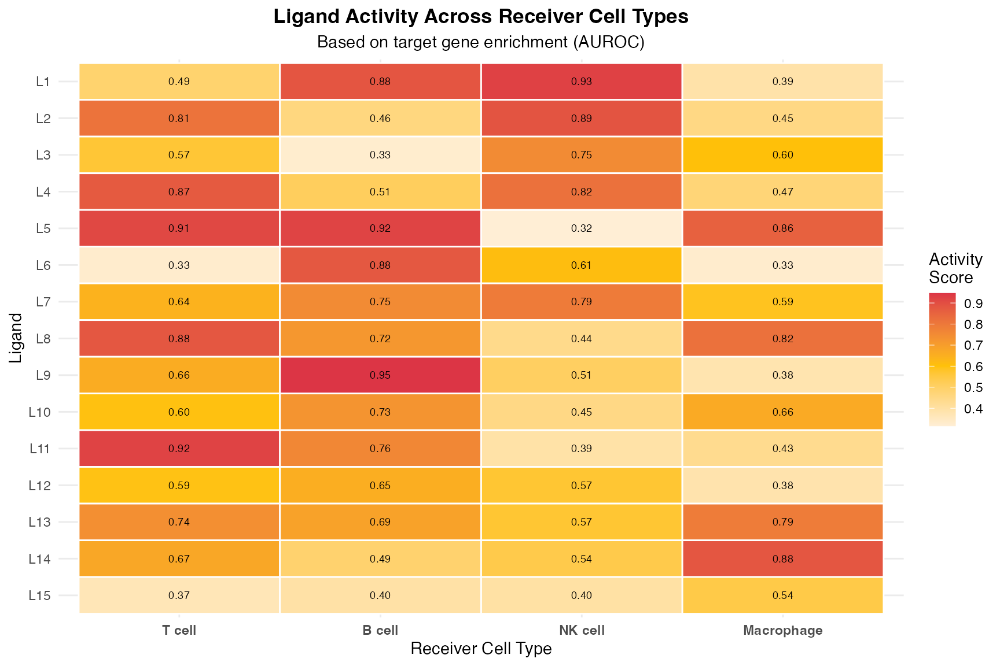
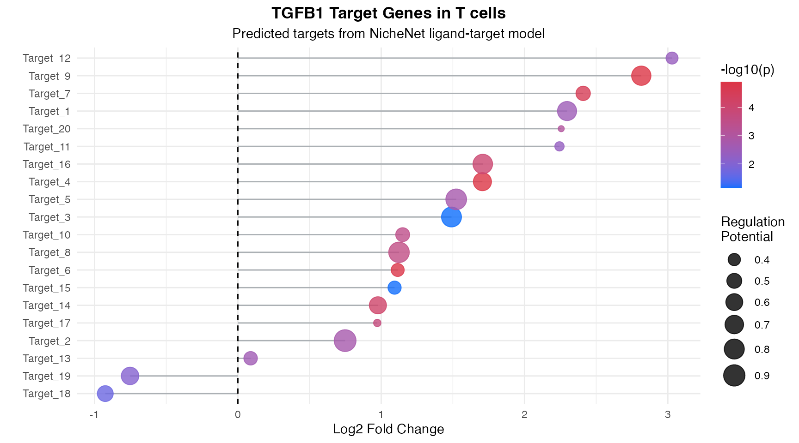

Visualization Gallery
Zaoqu Liu
2026-01-24
Source:vignettes/visualization-gallery.Rmd
visualization-gallery.RmdIntroduction
MultiNicheNet provides a comprehensive suite of visualization functions for exploring and communicating cell-cell communication analysis results. This gallery showcases all major plot types with example code.
Overview of Visualization Functions
| Function | Description | Use Case |
|---|---|---|
make_sample_lr_prod_plots |
L-R product across samples | Sample-level patterns |
make_ligand_receptor_lfc_plot |
Log fold change visualization | DE comparison |
make_circos_lr |
Circos plot of interactions | Network overview |
make_mushroom_plot |
Mushroom-style bubble plot | Multi-criteria display |
make_ligand_activity_plots |
Ligand activity heatmaps | Activity inference |
make_target_gene_plots |
Target gene expression | Downstream effects |
Sample-Level Visualizations
Ligand-Receptor Product Plots
The L-R product plot shows the combined expression of ligand-receptor pairs across samples:
library(multinichenetr)
library(dplyr)
# Load example output (from your analysis)
# output <- multi_nichenet_analysis(...)
# Select top interactions
prioritized_tbl <- output$prioritization_tables$group_prioritization_tbl %>%
filter(fraction_expressing_ligand_receptor > 0) %>%
filter(group == "High") %>%
top_n(15, prioritization_score)
# Create L-R product plot
p_lr_prod <- make_sample_lr_prod_plots(
output$prioritization_tables,
prioritized_tbl
)
print(p_lr_prod)
Differential Expression Visualization
# Log fold change plot for ligands and receptors
p_lfc <- make_ligand_receptor_lfc_plot(
receiver_de = output$ligand_activities_targets_DEgenes$receiver_de,
prioritized_tbl = prioritized_tbl,
contrast_oi = "High-Low"
)
print(p_lfc)
Network Visualizations
Circos Plots
Circos plots provide a global view of cell-cell communication patterns:
# Create circos plot
make_circos_lr(
prioritized_tbl = prioritized_tbl,
colors_sender = c("Macrophage" = "#E41A1C", "Fibroblast" = "#377EB8"),
colors_receiver = c("Tcell" = "#4DAF4A", "Bcell" = "#984EA3")
)
Multi-Criteria Bubble Plots
Mushroom Plots
The mushroom plot is a signature visualization of MultiNicheNet, displaying multiple criteria simultaneously:
# Create mushroom plot
p_mushroom <- make_mushroom_plot(
prioritization_tables = output$prioritization_tables,
top_n = 20,
contrast_oi = "High-Low"
)
print(p_mushroom)
Ligand Activity Visualizations
Activity Heatmaps
# Ligand activity heatmap
p_activity <- make_ligand_activity_plots(
ligand_activities_targets_DEgenes = output$ligand_activities_targets_DEgenes,
receiver_oi = "Tcell",
top_n_ligands = 20
)
print(p_activity)
Target Gene Visualizations
Target Gene Expression
# Target gene expression plot
p_targets <- make_target_gene_plots(
ligand_activities_targets_DEgenes = output$ligand_activities_targets_DEgenes,
ligand_oi = "TGFB1",
receiver_oi = "Tcell"
)
print(p_targets)